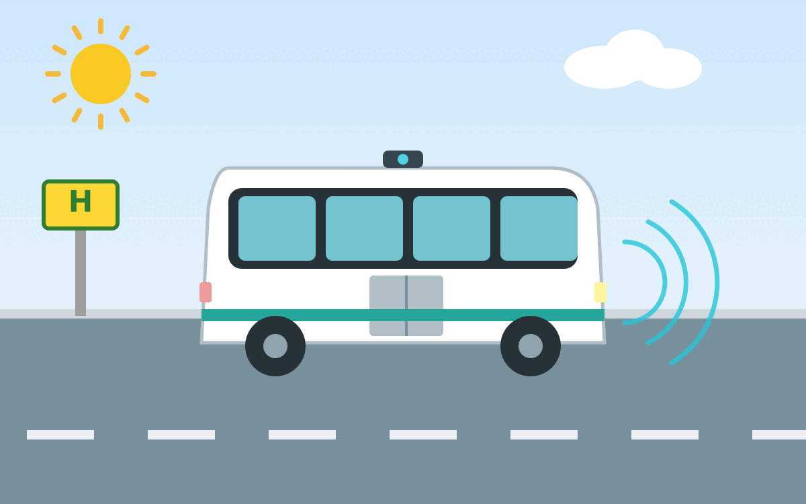

Autonome Shuttle-Busse sind Kleinbusse, die ohne Fahrer fahren können. Sie sind meist elektrisch betrieben, häufig für 6-12 Personen ausgelegt und fahren mit einer sehr niedrigen Geschwindigkeit. Sie werden häufig als Ride-Pooling-Systeme eingesetzt, bei denen mehrere Fahrgäste mit ähnlichen Routen gemeinsam befördert werden.
{kind=link}

Vergangene Projekte
- 2017 - 2021 in Marly bei Freiburg im Üechtland (Schweiz)[6]
- 2020 - 2024 "Shuttle-Modellregion" in Hof, Kronach, Rehau und Bad Steben. Max. 18 km/h, Shuttle-Operator an Bord; Leitstelle zur Koordination[1]
- 2021 - 2023 in Kelheim: KelRide
- Seit 2023 in Karlsruhe[2]
- Ab 2026 in Hamburg[3] AHOI und ALIKE[4]
- Ulm prüft es für 2030[5]
- 2025 waren in München (Hadern) elektrische Mini-Busse für 6 Wochen unterwegs.[7] Ab 2026 sollen sie in Freiham und Neuaubing fahren. Ab 2027-2028 sollen die ersten autonomen Mini-Busse mit bis zu 10 Passagieren und Midi-Busse mit bis zu 30 Passagieren fahren. Ab 2030 sollen die ersten autonomen Busse mit 60 oder mehr Passagieren fahren.
Experten
- Prof. Richard Göbel
- Jörg Schrepfer (Valeo)
Videos
Einzelnachweise
- 1↑ Annerose Zuber: "Autonomes Fahren nach vorne gebracht" – Forschungsprojekt endet, 30.09.2024
- 2↑ Autonomes Fahren im ÖPNV
- 3↑ Projekt ALIKE: Autonome On-Demand-Shuttles
- 4↑ Hamburg: autonomous shuttles delayed until 2026
- 5↑ Paolo Percoco: Autonomes Fahren in Ulm: SWU testet Shuttlebusse für die Zukunft, 07.04.2025.
- 6↑ Regula Saner: Selbstfahrende Busse liefern wichtige Erkenntnisse für die Zukunft, 08.02.2022.
- 7↑ Automation in public transport, 15.11.2023.